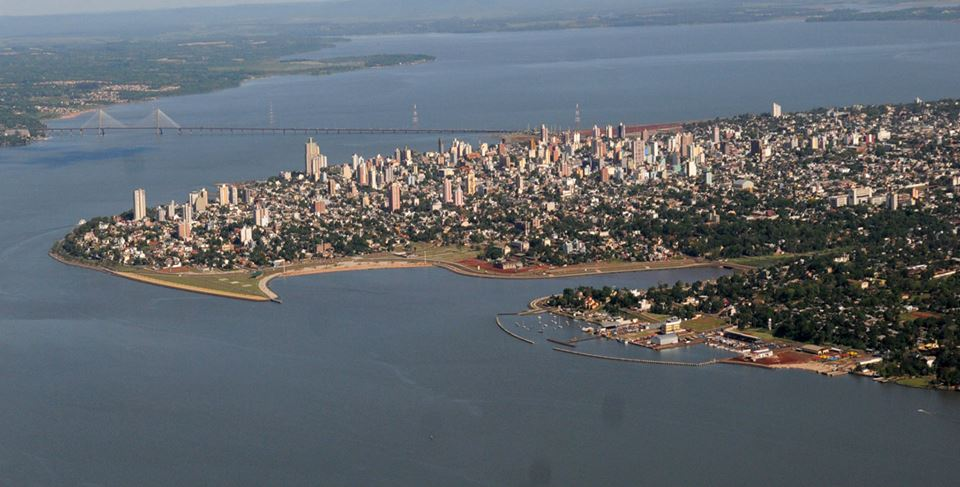

Argentina, Misiones, Posadas

Posadas is a city in Argentina, capital of the province of Misiones and head of the Capital department. It is located on the left bank of the Paraná River - which separates it from Paraguay -, southwest of the province and north of the Capital department.
Posadas is the provincial centre of the government, culture and the economy. Furniture, tobacco, food, textiles and construction are its most important industries. Other important economic activities are commerce and services.
Posadas is connected to the Paraguayan city of Encarnación by the San Roque González de Santa Cruz Bridge. The port, once of great economical importance, is used for sport vessels, carrier of passengers and some boats for sand transport. - Wikipedia